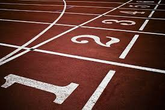
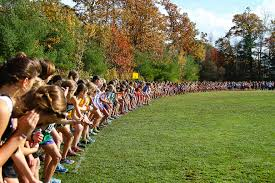

Track and Field
Track is a sport that features a variety of events that include running, jumping, and throwing. Typically
each event has a single winner who gains points for their team. Generally an individual sport, with the
exception of two relay races, which consist of teams of four runners, individuals gain points for their
team based on their place. First place recieves 5 point, second place 3 points, and third place 1 point.
Based off of my knowledge of high school track, not the Olympics or other major running events, the two teams
compete to have more points out of 100 than the other team.
Focusing on the running events, there are four categories that the thirteen events may fall under. The running events
can be seperated into four categories: the sprints, middle distance, long distance, and relay races.
Here is a list of the
Olympic running events, for both men and women. If you are still in school, your county may not participate in
all of these events. For example, my middle school excluded several of the throwing events, like javelin, and
the longest event that they had was the mile; however, I think that it is important to know what you are getting
into if you continue to participate in track beyond middle school and high school.
If you are new to running and track, I would suggest brushing up on the events and maybe trying each one to see
where you can be best suited in. In my opinion, you DEFINITELY need to train over the summer, at least three or four
times a week. Once you get in shape, make sure you keep training! If this is your first year in middle
school, you will have an advantage over the other students who did not take the time to run and train for the events
they would like to do. To be completely honest, summer training may be the most important part of your
preperation, but I would also suggest making sure that you keep in shape all year, by doing running camps or getting a
gym membership for the winter. Remember, make sure you keep in shape even when your season ends, and I would suggest even
joining your schools cross country team!

Cross Country
Cross country has a reputation of being horrible and overly long; however, in my opinion,
I think that as long as you train all summer in preparation and do winter and spring track
to stay in shape, eventually the long distance will be easy for you. In general, a
high school cross country race is a 5k, though this can vary in accordance to your grade
and time. For example, if you are a freshmen in high school you are automatically on
the freshmen team, unless you are sub 25:00.00 minutes. This can change based on your
school's team and how well they are doing.
Another thing that is in different based on your grade, is how long you run. In some
schools, freshmen only run 2 miles, unless they are needed in the other races.
The average race in cross country is a 5k and around forty teams compete.
The method of scoring for a cross country race is completely different from track. In cross country, the
lowest score wins, and the people who help you achieve this score is the first five
runners who finish first from your team in each race. How many points they get is
determined by their place. For example, if you get sixth place and you are one of
the first five runners from your team, your team will recieve six points.
These points add up and whoever has the least amount of points wins the meet. This
method of scoring is universal, so it does not matter how many teams you have;
however, if one of the teams claims first, second, and third place, they automatically
win the meet. That is called a sweep and it can only occur when there are just two
teams in a meet, and no more. If you are new to cross country, I would recommend reading
this article,called
"From Zero to Varsity: A Beginners Guide to Training for Cross Country",
that explains how to thrive in your first year without pushing yourself to much.
Megan M :)
We Run the County was created by Megan M.